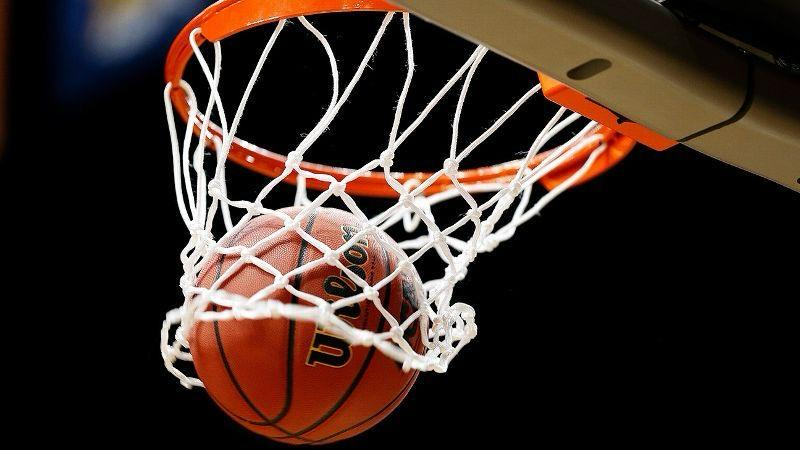
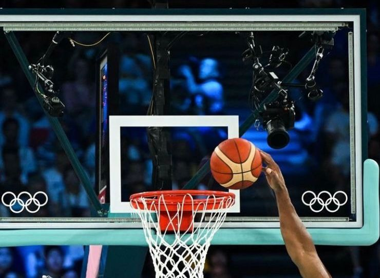
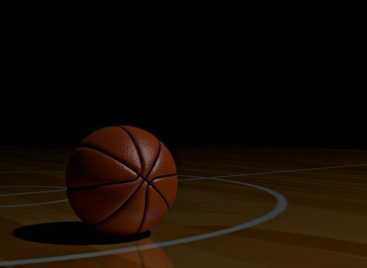
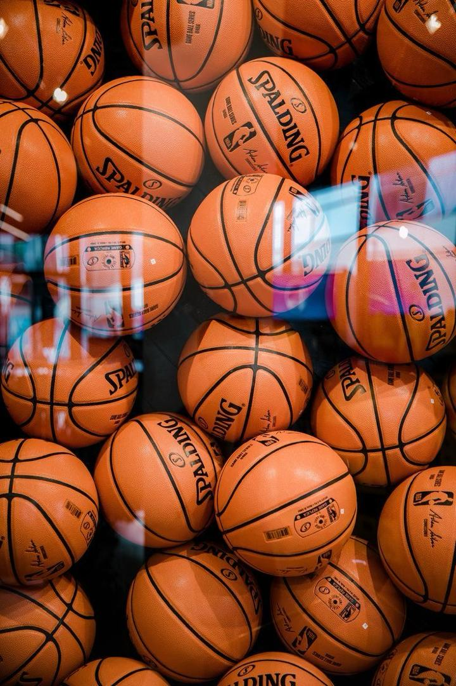

Compétitions Mondiales

La ligue de basketball la plus regardée au monde. Fondée en 1946, elle regroupe 30 franchises américaines et canadiennes. Les Finals NBA en juin couronnent le champion annuel.

La ligue de basketball féminin la plus prestigieuse au monde. Fondée en 1996 sous l'égide de la NBA, elle regroupe 13 franchises américaines. Les Finals WNBA en octobre couronnent chaque année la meilleure équipe de la saison.

Le basketball est au programme olympique depuis 1936 (hommes) et 1976 (femmes). Le "Dream Team" américain de 1992 reste la référence absolue du basketball olympique.

La principale compétition de clubs en Europe. Real Madrid, FC Barcelone, CSKA Moscou et Olympiakos dominent l'histoire de cette compétition de très haut niveau.

Organisé tous les deux ans par la FIBA Afrique, l'AfroBasket réunit les meilleures nations du continent. Le Nigeria, l'Angola et le Sénégal figurent parmi les nations les plus titrées.

Organisée tout les 4 ans, la Coupe du Monde FIBA oppose les meilleures sélections nationales.Les Etats-Unis dominent mais des surprises émergent à chaque édition.